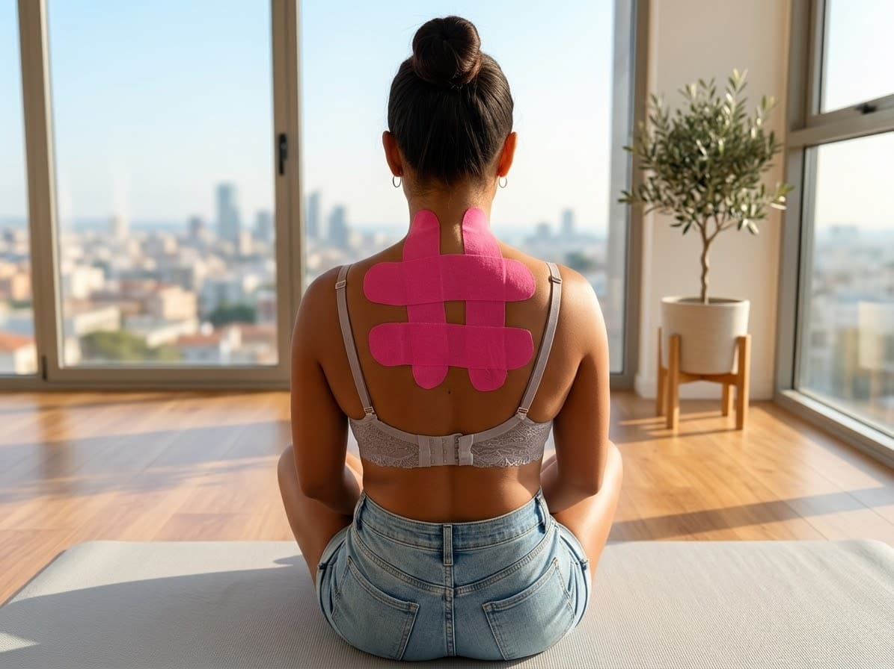

Agende Uma SessãoTaping é a aplicação de uma fita adesiva elástica sobre a pele, de acordo com uma técnica e um objetivo definidos após avaliação. A fita pode ser utilizada como recurso complementar de suporte ou estímulo sensorial. A indicação depende das necessidades e das características de cada pessoa; não substitui avaliação ou tratamento de saúde.
O profissional conversa sobre o objetivo, verifica as condições da pele e seleciona a fita e a forma de aplicação adequadas. A pele é limpa e seca, e a fita é colocada sobre a região conforme a técnica escolhida, sem causar desconforto. O profissional orienta quanto ao tempo de uso e à remoção. Se houver coceira, ardor ou irritação, retire a fita com cuidado e procure orientação.